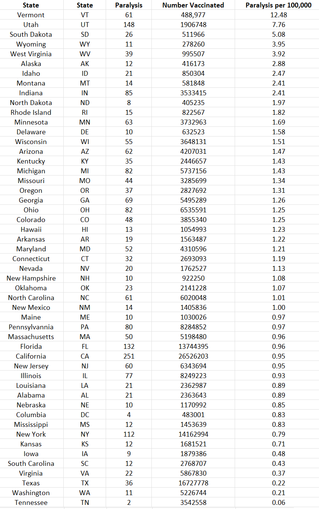
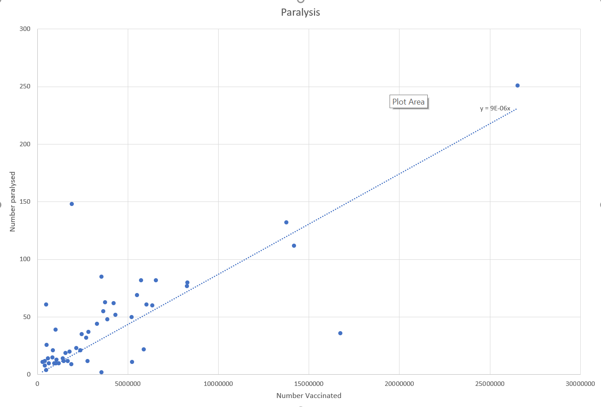
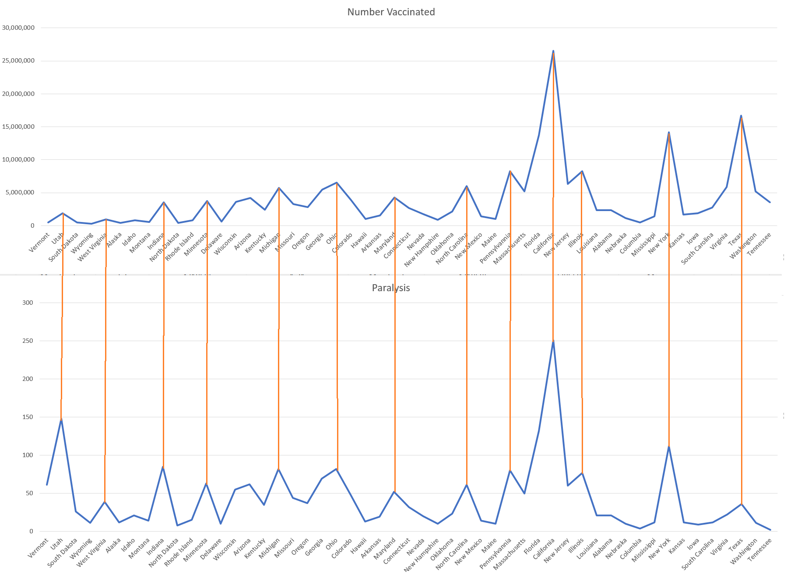
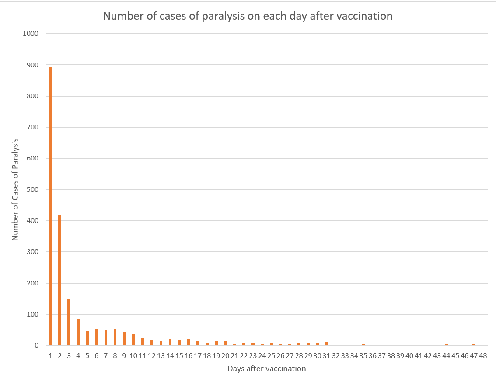
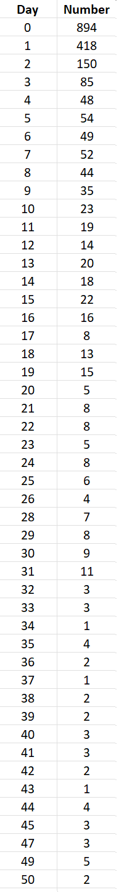
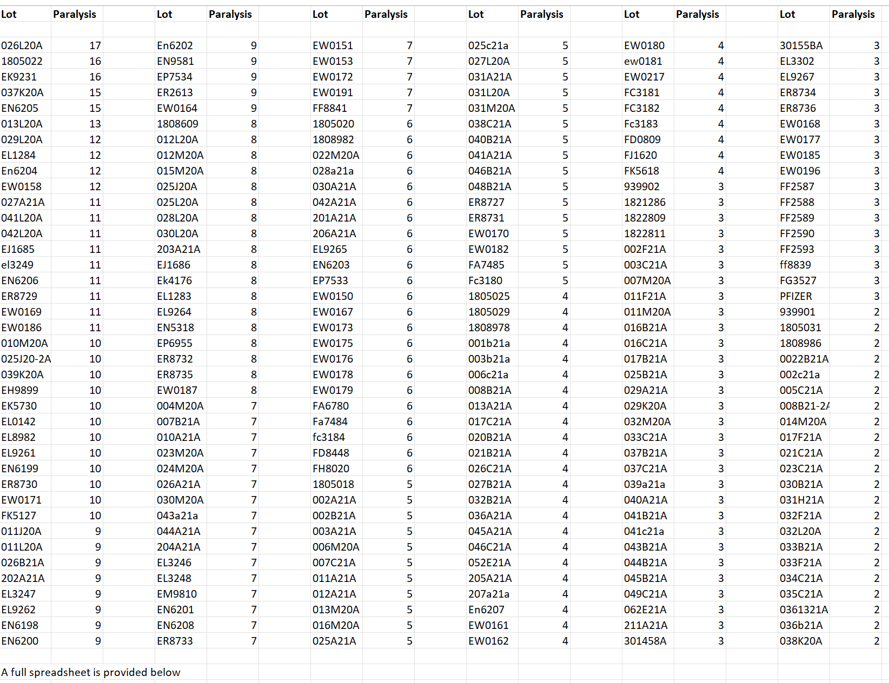
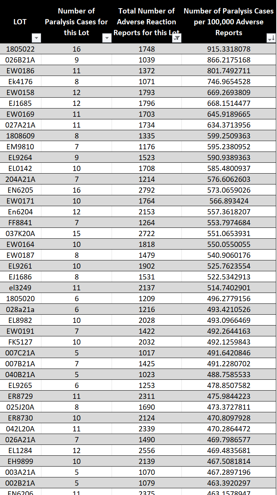

A Study of Paralysis Following Vaccination
home | Booster Warnings by Month | Moderna | Pfizer | Janssen | Moderna (outside USA) | Pfizer (outside USA) | Janssen (outside USA) | International Deadly Lots | 1st & 2nd Doses | Severe | Lethal | Size Matters | Lot Sizes | Time till onset | Second Peak | Lot Expiry Dates | RNA Degradation | Causality | All or Nothing | Clusters | Symptom | Paralysis | Children | Gender | States | Geography | Japan | Case Reports | Whistle Blowers | EMA Leaks | Video Library | Treatment | Background | Download Source Code | Data Cleaning | Donate
This site may slow down due to high traffic. A backup site has been created - HowBadisMyBatch.com to reduce overload Thankyou.
The Hidden Cost
VAERS USA 2021 records 2510 cases of paralysis following vaccination. However, I was surprised to find that only 81 of these reports are classified as disabled by VAERS.That's only 3.2%. So these terrible afflictions, though not counted by VAERS as disabilities, are a hidden cost - another level of suffering.
We are apt to think that all the serious injuries can be summed up as death or disability, but these are just tips of the iceberg. Just beneath the surface are a vast number of debilitating and incapacitating states.
Paralysis by State
Here is a chart showing the numbers paralysed in each state of the USA following vaccination.

Correlation of Paralysis with Number Vaccinated in Each State
When numbers paralysed is plotted against numbers vaccinated, a straightline appears, showing that as more people are vaccinated, the number paralysed goes up proportionately

The charts below show that as vaccination goes up, so do the cases of paralysis. As vaccination goes down, paralysis follows.

Time of Onset of Paralysis
Of the 2510 cases of paralysis recorded in VAERS USA 2021, 894 cases (36%) developed paralysis within 24 hours of vaccination, and 1312 cases (52%) developed paralysis within 48 hours..


What Lots Are Causing the Most Paralysis
Here is a table showing the number of cases of paralysis for each lot

Spreadsheets
In the spreadsheets below, I have divided the number of cases of paralysis associated with each lot by the total adverse reports for each lot, in order to arrive at the % of reports resulting in paralysis. This provides a useful index of lethality.
It is observed that the number of cases of paralysis per 100,000 adverse reports varies for each lot from 915, down to 48, a difference of 18 fold.
It is also observed that the EW range (that administered to children) is prominent - occupying many positions at the top of the table. It is surely a safety signal that young children and babies will be injected with something that may paralyse them, causing them immense distress, whilst yet being unnoticeable until they reach walking age - their bodies becoming a silent prison - despite the pain, unable to move or articulate their needs.
Here is a small sample of the results - the full spreadsheet can be found below - "Batches Causing Most Paralysis"

Contact
covidscienceteam@protonmail.com
Created by Craig Paardekooper ©2021